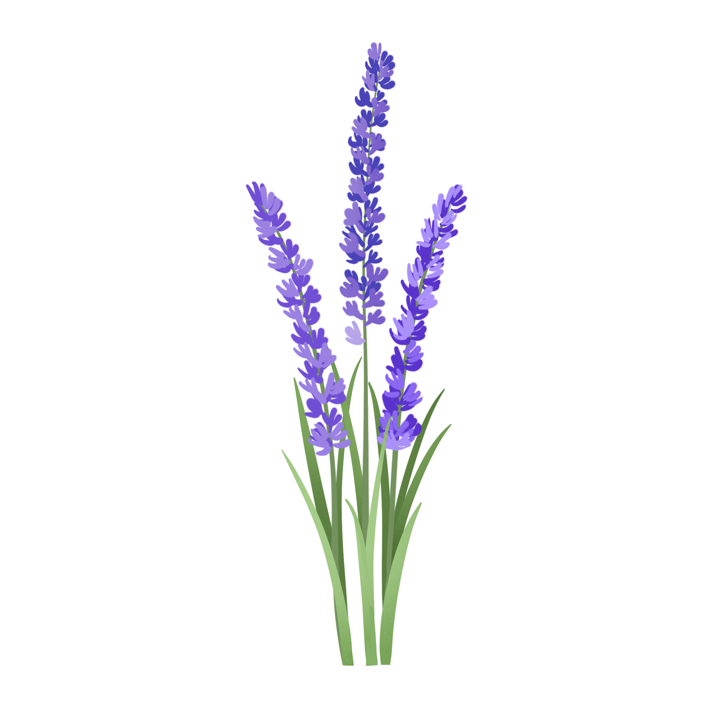
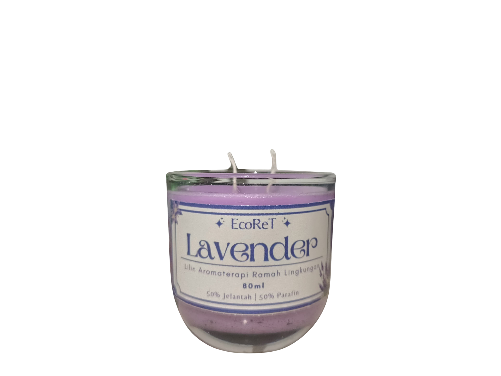
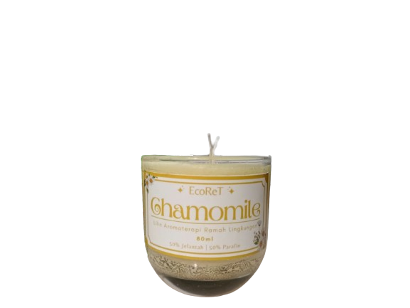
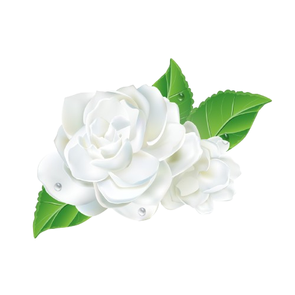
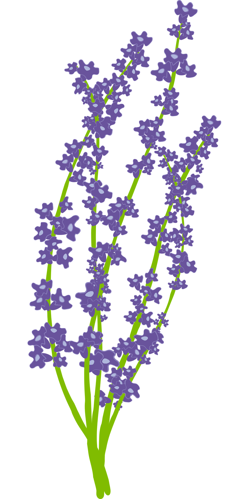
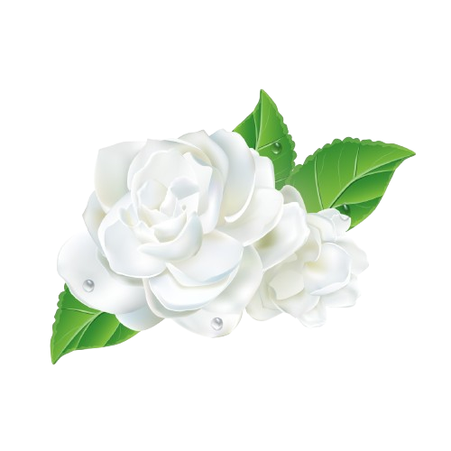
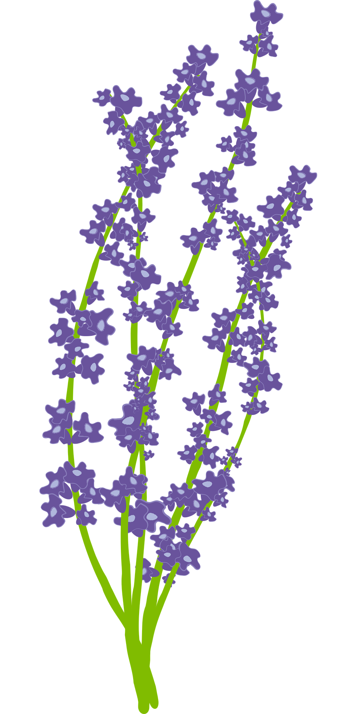

EcoReT
   




Lavender
Aroma lavender dikenal secara luas sebagai aromaterapi yang efektif untuk mengurangi kecemasan dan meningkatkan kualitas tidur. Menurut penelitian, lavender dapat menurunkan tingkat kortisol, hormon stres, dan membantu merelaksasi otot-otot.
Chamomile
Aroma chamomile dikenal memiliki sifat menenangkan dan sering digunakan untuk meredakan insomnia dan kecemasan. Senyawa aktif seperti apigenin dalam chamomile berikatan dengan reseptor di otak. Penelitian menunjukkan bahwa chamomile dapat membantu meningkatkan kualitas tidur dan mengurangi gejala kecemasan pada individu.


jasmine
Aroma jasmine juga dikenal memiliki sifat menenangkan dan menyegarkan, sering digunakan untuk menciptakan suasana yang lebih relaks dan nyaman. Senyawa aktif seperti indol dan jasmone dalam melati berinteraksi dengan reseptor di otak, yang dapat merangsang perasaan tenang dan bahagia. Penelitian menunjukkan bahwa melati dapat membantu mengurangi stres, meningkatkan mood, dan menciptakan rasa damai. Selain itu, aroma melati juga sering digunakan dalam aromaterapi untuk mengurangi kecemasan dan membantu menciptakan tidur yang lebih nyenyak.